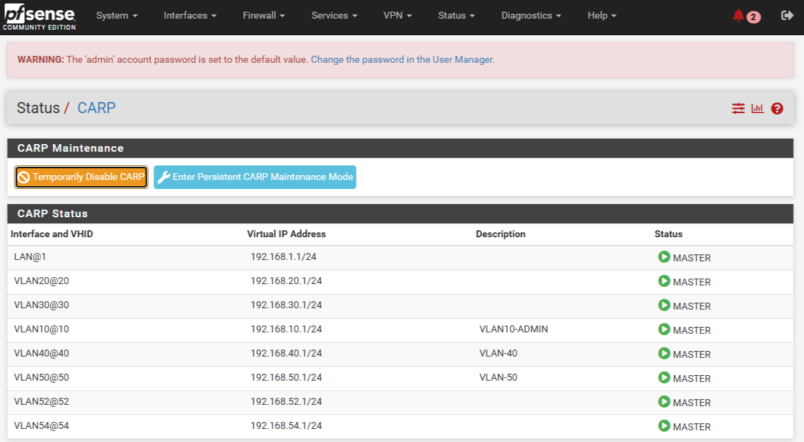
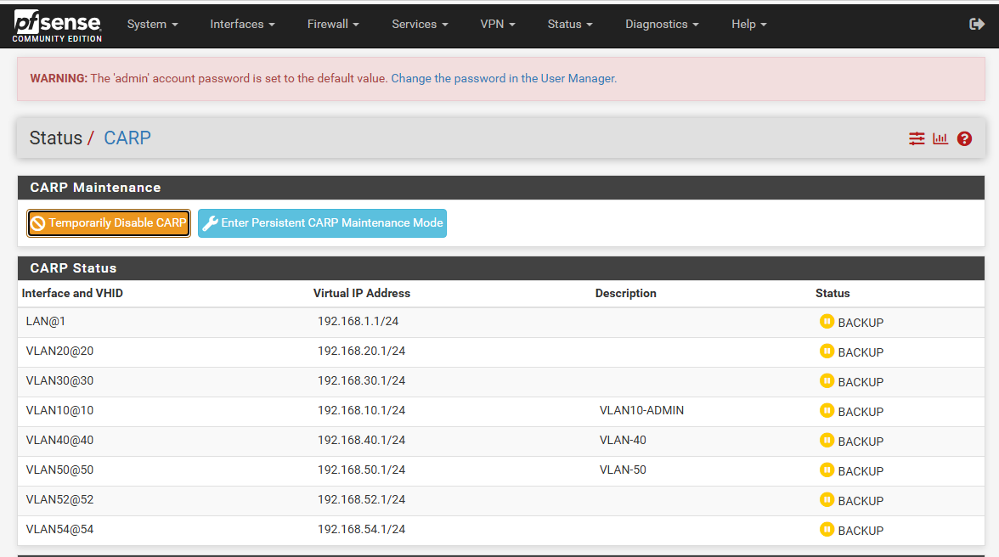

This project demonstrates the implementation of a High Availability firewall architecture using pfSense. The setup ensures continuous network connectivity through automatic failover between a primary and backup firewall using the Common Address Redundancy Protocol (CARP).


In enterprise environments, network downtime can severely impact operations. To address this challenge, this project implements a High Availability firewall architecture using two pfSense firewall instances configured in a failover pair.
The setup consists of a primary firewall (MASTER) and a secondary firewall (BACKUP). Both firewalls share a virtual IP address through CARP. The primary firewall actively processes traffic while the backup firewall continuously synchronizes its configuration and remains ready to take over in case of failure.
If the master firewall becomes unavailable due to hardware failure, network issues, or system errors, the backup firewall automatically assumes the MASTER role. This failover occurs almost instantly, ensuring that network services remain available without manual intervention.
Firewall rules, NAT policies, and configuration settings are synchronized between both nodes to maintain consistency. This ensures that the backup firewall can immediately take over network traffic without disrupting existing sessions or services.
This High Availability architecture improves network reliability, minimizes downtime, and ensures continuous service availability for enterprise infrastructure.
pfSense is an open-source firewall and routing platform used to secure and manage network traffic. It provides advanced firewall rules, network monitoring, and VPN capabilities.
CARP enables multiple firewall systems to share a virtual IP address. This allows automatic failover between primary and backup nodes without interrupting network services.
State synchronization ensures that active firewall sessions and connection states are replicated between the primary and backup firewalls, allowing seamless failover during outages.
Firewall rules control network traffic between internal and external networks. In this project, the rules are synchronized between both pfSense nodes to maintain consistent security policies.
NAT allows internal private IP addresses to communicate with external networks while hiding internal network structure for improved security.
The High Availability configuration ensures that if one firewall fails, the backup system immediately takes control, maintaining uninterrupted network connectivity.